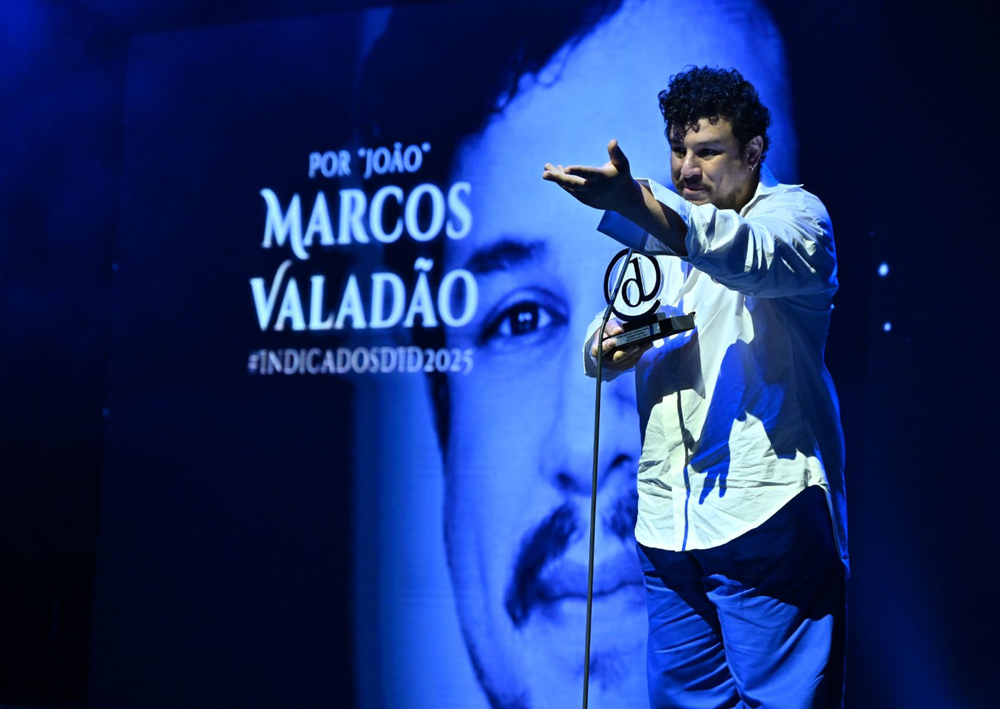

8ª edição do Prêmio Destaque Imprensa Digital celebra a excelência do teatro musical brasileiro

Cerimônia no Teatro Liberdade reúne artistas, criadores e profissionais do setor em noite de homenagens, encontros simbólicos e números inéditos
A 8ª edição do Prêmio Destaque Imprensa Digital (DID) foi realizada no dia 9 de dezembro, no Teatro Liberdade, em São Paulo, celebrando a potência, a diversidade e a maturidade criativa do teatro musical brasileiro. Considerado o maior e único prêmio dedicado exclusivamente ao gênero no país, o DID reuniu artistas, criadores, produtores e profissionais do mercado em uma noite marcada por encontros simbólicos, performances especiais e olhares para o futuro da cena musical.
A cerimônia foi realizada em parceria com a Infinitus, empresa do Grupo IN, responsável pela gestão do Teatro Liberdade — espaço que, desde 2021, se consolidou como um dos principais palcos do teatro musical em São Paulo.
Um prêmio que celebra destaques, não hierarquias
Idealizado por Joaquim Araújo e cofundado por Grazy Pisacane, Wall Toledo e Pedro de Landa (in memoriam), o Prêmio Destaque Imprensa Digital nasceu com a missão de reconhecer as produções que passaram pela capital paulista e evidenciar o caráter colaborativo do teatro musical.
Desde sua criação, em 2017, o DID se diferencia ao não eleger “o melhor”, mas sim os destaques da temporada — conceito que valoriza contribuições artísticas e técnicas que se sobressaíram segundo a avaliação do júri. Essa abordagem plural entende que o reconhecimento começa já na lista de indicados, reforçando o espírito coletivo que move o gênero. Ao longo dos anos, esse olhar crítico e celebratório tornou-se uma das marcas mais consistentes da premiação.
Recorte da temporada 2025
A edição de 2025 avaliou 36 produções que estrearam ou cumpriram temporada em São Paulo entre 1º de novembro de 2024 e 31 de outubro de 2025, respeitando o critério mínimo de 12 sessões. Os espetáculos concorreram em 18 categorias, garantindo um panorama amplo, diverso e representativo da temporada.
O corpo de jurados foi formado por jornalistas e comunicadores especializados em teatro musical, que acompanham e divulgam o setor em diferentes plataformas:
Joaquim Araújo, Wall Toledo, Andy Santana, Arthur Pazin, Bruno Cavalcanti, Claudio Erlichman, Danilo Gobatto, Isabel Branquinha, Miguel Arcanjo Prado, Priscila Ribeiro, Ubiratan Brasil e William Amorim.
Uma noite de música, encontros e antecipações
A cerimônia foi conduzida pelos mestres de cerimônia Rodrigo Miallaret e Maria Clara Rosis e contou com apresentações especiais, em formato voz e piano, de trechos dos musicais indicados às categorias de Destaque Musical Brasileiro e Destaque Musical Estrangeiro. O tradicional medley de encerramento apresentou ao público títulos já confirmados para a temporada de 2026, reforçando o papel do DID como um espaço que celebra o presente e projeta o futuro do gênero.
Destaques da noite
A lista de premiados da 8ª edição do DID desenhou um retrato preciso da diversidade estética e da força criativa do teatro musical brasileiro em 2025.
Entre os musicais estrangeiros, Uma Babá Quase Perfeita foi o grande destaque da noite, conquistando os prêmios de Musical, Ator, Cenografia e Revelação. Já no cenário nacional, Torto Arado consolidou sua relevância ao vencer Musical Brasileiro, Direção e Atriz.
A dramaturgia brasileira também foi celebrada com Dom Casmurro, vencedor nas categorias Dramaturgia Original e Letra Original, enquanto Dreamgirls – Em Busca de um Sonho foi reconhecido por Visagismo e Ator Coadjuvante. A excelência técnica apareceu ainda em títulos como Chorus Line (Iluminação), Meninas Malvadas – O Musical (Atriz Coadjuvante) e Jersey Boys (Direção Musical). O prêmio de Destaque Elenco foi concedido a Ray – Você Não Me Conhece.
Encontros simbólicos e pontes entre gerações
Entre os momentos mais emblemáticos da noite estiveram encontros que simbolizaram a continuidade e a renovação do teatro musical. Stella Maria Rodrigues e Mara Carvalho dividiram o palco representando dois aguardados títulos nacionais de 2026: Meu Filho é um Musical, inspirado na vida e no legado de Paulo Gustavo, e Susi – O Tempo Dispara.
Já Totia Meirelles e Carol Botelho celebraram diferentes gerações de Chorus Line — Totia integrou a montagem de 1983, enquanto Carol está na produção atual — e também se reencontrarão em 2026 na nova montagem de Ópera do Malandro, dirigida por Jorge Farjalla. O mesmo espetáculo foi representado por Amaury Lorenzo, estreante no gênero, e por Ana Luiza Ferreira, vencedora de Destaque Atriz em 2024.
Outros artistas ligados a produções previstas para 2026 também participaram da cerimônia, como Claudio Lins e Giselle Prattes (Diana – A Princesa do Povo), Analu Pimenta e Carol Roberto (Tina – O Musical), além de Leonardo Miggiorin, Rafael Pucca, Hugo Bonemer (Destaque Ator Coadjuvante 2024) e Renan Mattos (Destaque Ator 2022).
Um espaço de celebração e continuidade
Ao longo de oito edições, o Prêmio Destaque Imprensa Digital consolidou-se como um importante ponto de encontro entre a imprensa especializada e a classe artística, valorizando produções, profissionais e narrativas que constroem o teatro musical brasileiro contemporâneo. A edição de 2025 reafirmou esse compromisso e lançou um olhar promissor para uma temporada de 2026 repleta de novos encontros, histórias e experiências.
Premiados da 8ª edição do Prêmio Destaque Imprensa Digital
Destaque Cenografia Rogério Falcão | Uma Babá Quase Perfeita
Destaque Coreografia Gabriel Malo e Nyandra | Rio Uphill
Destaque Iluminação Túlio Pezzoni | Chorus Line
Destaque Visagismo Dicko Lorenzo | Dreamgirls – Em Busca de um Sonho
Destaque Figurino Marcos Valadão | João
Destaque Dramaturgia Original Davi Novaes | Dom Casmurro
Destaque Letra Original Guilherme Gila | Dom Casmurro
Destaque Revelação em Musicais Diego Becker | Uma Babá Quase Perfeita
Destaque Ator Coadjuvante Reynaldo Machado | Dreamgirls
Destaque Atriz Coadjuvante Lara Suleiman | Meninas Malvadas – O Musical
Destaque Ator Eduardo Sterblitch | Uma Babá Quase Perfeita
Destaque Atriz Larissa Luz | Torto Arado
Destaque Elenco Ray – Você Não Me Conhece
Destaque Direção Musical Jorge de Godoy | Jersey Boys – A História de Frankie Valli e The Four Seasons
Destaque Direção Elisio Lopes Jr. | Torto Arado
Destaque Musical Estrangeiro Uma Babá Quase Perfeita
Destaque Musical Brasileiro Torto Arado
Destaque Musical – Voto Popular Meninas Malvadas – O Musical